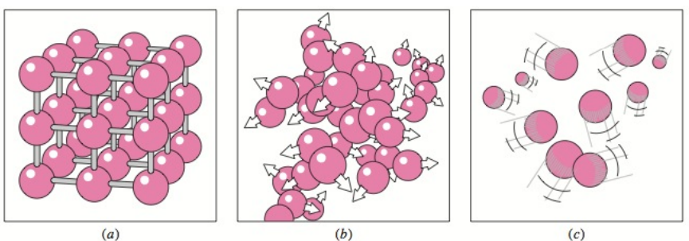
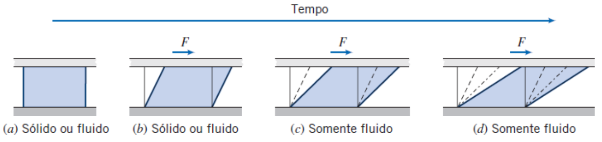

Aula 01 - Introdução à Mecânica dos Fluidos
Mecânica dos Fluidos
Objetivos
Ao final desta aula, você deverá ser capaz de:
- Compreender o campo de estudo da Mecânica dos Fluidos e sua importância em aplicações cotidianas, tecnológicas e científicas.
- Definir fluido do ponto de vista mecânico e explicar por que ele se deforma continuamente sob ação de tensões tangenciais.
- Diferenciar, com exemplos práticos, o comportamento mecânico de sólidos, líquidos e gases.
- Conhecer, em linhas gerais, a evolução histórica da Mecânica dos Fluidos e seus principais protagonistas.
- Definir e calcular a massa específica (ou densidade absoluta) de corpos homogêneos e misturas.
- Definir pressão e calcular a pressão média exercida por forças normais sobre superfícies, inclusive quando a força é aplicada com inclinação.
- Aplicar corretamente os conceitos de algarismos significativos e realizar cálculos diretos para evitar erros de arredondamento.
Introdução
Você já parou para pensar na quantidade de situações que envolvem o comportamento de fluidos no seu dia a dia?
Desde o simples ato de tomar um copo d’água até o voo de um avião, passando pelo funcionamento do sistema circulatório, pelos freios hidráulicos de um carro, pelas previsões meteorológicas e até pela brincadeira de soprar a tampa de uma caneta, a Mecânica dos Fluidos está presente.
Mas, afinal, o que é um fluido? Por que a água flui e o gelo, não? O que faz um avião voar? Como a pressão age nos pneus do carro? Por que os rios correm mais rápido em alguns trechos e mais devagar em outros?
Essas perguntas, e muitas outras, são respondidas pela Mecânica dos Fluidos, o ramo da Física que estuda o comportamento de líquidos e gases, tanto em repouso quanto em movimento, bem como suas interações com superfícies sólidas e com outros fluidos.
A Mecânica dos Fluidos se divide, de modo geral, em duas grandes áreas:
- Estática dos Fluidos (Hidrostática): estuda fluidos em repouso, como a pressão no fundo de uma piscina ou o empuxo que mantém um navio flutuando.
- Dinâmica dos Fluidos (Hidrodinâmica): estuda fluidos em movimento, como o escoamento de água em canos, o fluxo de ar sobre uma asa de avião ou a circulação do sangue nas artérias.
Nesta aula inicial, nosso foco estará nos conceitos fundamentais, a própria definição de fluido, as propriedades como massa específica e pressão, e um passeio pela história dessa ciência, que servirão de base para o estudo sistemático da hidrostática e, posteriormente, da hidrodinâmica.
Ao final desta jornada, você não apenas compreenderá melhor o mundo ao seu redor, como também estará preparado para resolver problemas práticos e para as próximas etapas do curso.
Conceito de fluido
Um fluido, ao contrário de um sólido, é uma substância que pode escoar. Os fluidos assumem a forma do recipiente em que são colocados, pois não resistem a forças paralelas à superfície.
De forma intuitiva, os fluidos incluem líquidos e gases.

Definição formal
De forma mais rigorosa, chamamos de fluido toda substância que se deforma continuamente quando submetida a uma tensão tangencial, por menor que ela seja.
- Sólidos resistem a tensões de cisalhamento.
- Fluidos não resistem: qualquer cisalhamento provoca escoamento.

Em particular:
- Um líquido possui volume definido, mas não forma própria.
- Um gás não possui nem forma nem volume definidos.
Breve História da Mecânica dos Fluidos
A Mecânica dos Fluidos, como muitos ramos da Física, desenvolveu-se a partir de necessidades práticas e, posteriormente, consolidou-se como ciência através de experimentos e formulações matemáticas. Vamos conhecer os principais marcos dessa jornada.
Antiguidade: As Primeiras Aplicações

Arquimedes de Siracusa é considerado um dos precursores. Seu famoso princípio — “todo corpo imerso em um fluido sofre um empuxo igual ao peso do fluido deslocado” — foi o primeiro tratamento quantitativo dado a um fenômeno envolvendo fluidos. Reza a lenda que ele teria descoberto esse princípio ao entrar em uma banheira e, eufórico, saído correndo nu pelas ruas gritando “Eureka!” (achei!).

Na mesma época, os romanos já construíam aquedutos e sistemas de abastecimento de água, demonstrando conhecimento empírico de escoamento em canais, ainda que sem uma base teórica formal.
Idade Média e Renascimento: Avanços Práticos

Durante a Idade Média, o desenvolvimento da Mecânica dos Fluidos esteve ligado à construção de moinhos d’água, canais de navegação e sistemas de irrigação. No Renascimento, Leonardo da Vinci fez observações detalhadas do escoamento da água, desenhando fluxos, redemoinhos e turbulências em seus cadernos. Ele compreendeu intuitivamente a conservação da massa em escoamentos, mas suas observações não foram formalizadas matematicamente.

Século XVII: A Pressão em Foco


Evangelista Torricelli, aluno de Galileu, inventou o barômetro de mercúrio e demonstrou que o ar tem peso. A experiência de Torricelli (1643) criou vácuo no topo de um tubo de mercúrio, provando que a pressão atmosférica sustenta a coluna líquida.


Blaise Pascal formulou a Lei de Pascal: a pressão aplicada a um fluido em equilíbrio transmite-se integralmente a todos os pontos do fluido e às paredes do recipiente. Essa lei é a base do funcionamento de prensas hidráulicas, elevadores de carros e freios de automóveis.
Século XVIII: A Equação de Bernoulli

Daniel Bernoulli, em sua obra Hydrodynamica (1738), estabeleceu a relação entre pressão, velocidade e altura em um fluido em movimento, conhecida hoje como Equação de Bernoulli. Embora sua dedução original fosse mais conceitual que matemática, ela representa a aplicação do princípio da conservação da energia aos fluidos.

Paralelamente, Leonhard Euler, contemporâneo e amigo de Bernoulli, desenvolveu as equações diferenciais que descrevem o movimento de fluidos ideais (sem viscosidade), as chamadas Equações de Euler, dando à Mecânica dos Fluidos uma base matemática rigorosa.
Século XIX: Viscosidade e Turbulência

Claude-Louis Navier, engenheiro e físico francês, iniciou os trabalhos que levariam às equações fundamentais da dinâmica dos fluidos viscosos.

George Gabriel Stokes, físico e matemático irlandês, generalizou as equações de Euler para incluir os efeitos da viscosidade, resultando nas famosas Equações de Navier-Stokes, que até hoje são a base da Dinâmica dos Fluidos e um dos maiores desafios matemáticos da Física (seu comportamento para escoamentos turbulentos é tema do Prêmio do Milênio).

Osborne Reynolds, através de experimentos cuidadosos, identificou a transição entre escoamento laminar (suave e ordenado) e turbulento (caótico e com redemoinhos). Ele introduziu um número adimensional, hoje chamado Número de Reynolds, que permite prever qual regime de escoamento ocorrerá.

Henry Darcy, engenheiro francês, estudou o escoamento em tubos e meios porosos, dando nome à Lei de Darcy, fundamental para hidrologia e engenharia de petróleo.
Século XX em diante: A Era Moderna

Ludwig Prandtl, considerado o pai da aerodinâmica moderna, desenvolveu o conceito de camada limite, que explica como a viscosidade afeta o escoamento próximo a superfícies sólidas.

A aviação comercial, a exploração espacial, a meteorologia, a oceanografia e a bioengenharia são áreas que dependem fundamentalmente da Mecânica dos Fluidos. Atualmente, a Fluidodinâmica Computacional (CFD) permite simular escoamentos complexos em computadores, desde o fluxo sanguíneo em artérias até a aerodinâmica de carros de Fórmula 1 e foguetes.
Massa específica
A massa específica \(\rho\) é definida formalmente por:
\[ \rho = \lim_{\Delta V \to 0} \frac{\Delta m}{\Delta V} \]
ou, de forma diferencial,
\[ \boxed{\rho = \frac{dm}{dV}} \]
No SI:
\[ [\rho] = \text{kg/m}^3 \]
Para fluidos incompressíveis (bons líquidos), \(\rho\) pode ser considerada constante, levando à forma prática:
\[ \boxed{\rho = \frac{m}{V}} \]
Exemplo 1.1 - Cálculo da massa específico de um óleo
Um tanque contém \(500\,\text{l}\) de óleo com massa total de \(430\,\text{kg}\). Sabendo que \(1\,\text{l} = 10^{-3}\,\text{m}^3\) e que o óleo é homogêneo e incomprensível, determine a massa específica deste óleo em \(\text{kg}/\text{m}^3\).
Solução:
\[ V = 500 \times 10^{-3} \, \text{m}^{3} = 0{,}500\,\text{m}^3 \]
\[ \rho = \frac{430\,kg}{0{,}500\,m^{3}} = 860\,\text{kg}/\text{m}^3 \]
Portanto, a densidade deste óleo é:
\[ \boxed{\rho = 860\,\text{kg}/\text{m}^3} \]
Exemplo 1.2 - Densidade média de uma mistura (gasolina + etanol)
Em um reservatório, mistura-se gasolina e etanol de modo que:
- 70,0% do volume total é gasolina.
- 30,0% do volume total é etanol.
Considere as massas específicas:
- Gasolina: \(\rho_g = 740\,\text{kg/m}^3\).
- Etanol: \(\rho_e = 790\,\text{kg/m}^3\).
Assumindo que esta representa uma mistura ideal, isto é, sem contração/expansão de volume ao misturar, determine a massa específica média \(\rho_m\) da mistura em \(\text{kg}/\text{m}^3\).
Método 1: Média Ponderada (mais rápido e prático)
Para misturas ideais, a massa específica média é a média ponderada das massas específicas dos componentes, usando as frações volumétricas como pesos:
\[ \rho_m = \rho_g \cdot f_g + \rho_e \cdot f_e \]
Onde: - \(f_g = 0{,}700\) (fração volumétrica de gasolina) - \(f_e = 0{,}300\) (fração volumétrica de etanol)
Substituindo os valores em uma única expressão:
\[ \rho_m = 740 \times 0{,}700 + 790 \times 0{,}300 \]
Calculando de uma só vez:
\[ \rho_m = 518 + 237 = 755\,\text{kg/m}^3 \]
Análise de algarismos significativos:
- \(740\) possui 3 algarismos significativos
- \(790\) possui 3 algarismos significativos
- \(0{,}700\) e \(0{,}300\) são frações exatas (derivadas de 70,0% e 30,0%, que têm 3 algarismos significativos)
O resultado deve ter 3 algarismos significativos: \(755\,\text{kg/m}^3\) já está com 3 algarismos.
Método 2: Dedução algébrica (conceitual)
A massa total da mistura é a soma das massas de cada componente:
\[ m_{\text{tot}} = m_g + m_e \]
Como \(m = \rho \cdot V\), temos:
\[ m_{\text{tot}} = \rho_g V_g + \rho_e V_e \]
A massa específica média é definida como:
\[ \rho_m = \frac{m_{\text{tot}}}{V_{\text{tot}}} \]
Substituindo:
\[ \rho_m = \frac{\rho_g V_g + \rho_e V_e}{V_{\text{tot}}} \]
Reorganizando:
\[ \rho_m = \rho_g \cdot \frac{V_g}{V_{\text{tot}}} + \rho_e \cdot \frac{V_e}{V_{\text{tot}}} \]
As frações volumétricas são exatamente:
\[ \frac{V_g}{V_{\text{tot}}} = 0{,}700 \quad \text{e} \quad \frac{V_e}{V_{\text{tot}}} = 0{,}300 \]
Portanto:
\[ \rho_m = \rho_g \cdot 0{,}700 + \rho_e \cdot 0{,}300 \]
Substituindo os valores numéricos em uma única expressão:
\[ \rho_m = 740 \times 0{,}700 + 790 \times 0{,}300 \]
Calculando diretamente:
\[ \rho_m = 518 + 237 = 755\,\text{kg/m}^3 \]
Resultado Final
\(\)
Pressão em um fluido
A pressão \(p\) em um ponto é definida como o limite da razão entre a força normal (\(F_\perp\) )exercida sobre uma superfície e a área dessa superfície (\(A\)), quando a área tende a zero:
\[ p = \lim_{\Delta A \to 0} \frac{\Delta F_\perp}{\Delta A} \]
Na forma diferencial:
\[ p = \frac{dF_\perp}{dA} \]
No Sistema Internacional:
\[ 1\,\text{Pa} = 1\,\text{N/m}^2 \]
Pressão em fluidos em repouso
Em um fluido em equilíbrio, não existem tensões tangenciais internas. Assim, a pressão atua igualmente em todas as direções e pode ser tratada como uma grandeza escalar.
Exemplo 1.3 - Cálculo da pressão exercida pela força peso
Uma pessoa de massa \(70\,\text{kg}\) apoia-se sobre um único pé, cuja área de contato com o solo é \(150\,\text{cm}^2\). Estime a pressão exercida em Pa.
Solução:
\[ A = 150\,\text{cm}^{2} = 150\times10^{-4}\,\text{m}^{2} = 1{,}50\times10^{-2}\,\text{m}^2 \]
\[ p = \dfrac{F}{A} \rightarrow p = \dfrac{mg}{A} \]
Usando o valor paroximado para acelaração da gravidade \(g = 9,8\, m/s^{2}\) e substituindo os valores numéricos:
\[ p = \dfrac{70\,\text{kg} \cdot 9,8\,\text{m}/\text{s}^{2}}{1{,}50 \times 10^{-2}\,\text{m}^{2}} \rightarrow p = 4{,}6\times10^{4}\,\text{Pa} \]
Portanto:
\[ \boxed{p = 4{,}6 \times 10^{4}\,\text{Pa}} \]
Exemplo 1.4 - Cálculo da pressão exercida por uma força formando um ângulo
Uma força de intensidade \(F = 120\,\text{N}\) é aplicada sobre a superfície de uma placa plana de área \(A = 0{,}015\,\text{m}^2\) fazendo um ângulo de \(\theta = 30^\circ\) com a normal à placa (isto é, o ângulo é medido em relação à direção perpendicular à superfície).
Determine:
- A componente normal da força, \(F_\perp\) em N.
- A pressão média exercida sobre a placa em Pa.
Solução:
- Componente normal da força
Se o ângulo \(\theta\) é medido em relação à normal, então a componente normal é:
\[ F_\perp = F\cos\theta. \]
Substituindo os valores:
\[ F_\perp = 120\,N\,\cos(30^\circ) \]
\[ F_\perp = 104\ \text{N} \]
Logo,
\[ \boxed{F_\perp = 104\,\text{N}} \]
- Pressão média exercida
A pressão média é:
\[ p = \frac{F_\perp}{A}. \]
Substituindo:
\[ p = \frac{104}{0{,}015} \]
Portanto,
\[ \boxed{p = 6,9 \times 10^{3}\ \text{Pa}} \]
Observação importante:
Se o ângulo fosse informado em relação ao plano (isto é, em relação à própria superfície), então a componente normal seria:
\[ F_\perp = F\sin\theta \]
Pois, nesse caso, \(\theta\) seria complementar ao ângulo medido em relação à normal.
Em problemas de pressão, sempre verifique como o ângulo foi definido, pois a pressão depende exclusivamente da componente normal da força.
Conclusão
Nesta aula introdutória, estabelecemos os conceitos fundamentais da Mecânica dos Fluidos, incluindo definições formais de fluido, massa específica e pressão. Esses conceitos servirão de base para o estudo da estática dos fluidos, onde analisaremos a variação da pressão em fluidos em repouso e suas aplicações práticas.
Exercícios De Fixação
- 1.1)
- Um fluido é definido, do ponto de vista mecânico, como uma substância que:
- Possui sempre volume constante e forma própria.
- Resiste a tensões normais, mas não a tangenciais.
- Se deforma continuamente sob qualquer tensão tangencial, por menor que seja.
- Apresenta apenas deformações elásticas.
- Não sofre deformações quando submetida a forças externas.
- 1.2)
- A principal diferença mecânica entre sólidos e fluidos está relacionada à:
- Capacidade de ocupar volume.
- Forma geométrica do material.
- Resistência a forças normais.
- Resposta às tensões de cisalhamento.
- Massa específica do material.
- 1.3)
- Um líquido, diferentemente de um gás, caracteriza-se por:
- Não possuir forma nem volume definidos.
- Possuir forma própria, mas não volume definido.
- Possuir volume definido, mas não forma própria.
- Não sofrer deformações quando submetido a forças.
- Resistir permanentemente ao cisalhamento.
- 1.4)
- A pressão em um ponto de um fluido em repouso é definida fisicamente como:
- A força total exercida pelo fluido.
- A razão entre a força tangencial e a área.
- A força média distribuída pelo volume.
- A força exercida apenas pelo peso do fluido.
- A componente normal da força por unidade de área.
- 1.5)
- A definição formal de massa específica
\[ \rho = \lim_{\Delta V \to 0} \frac{\Delta m}{\Delta V} \]
Indica que a massa específica é:
- Uma grandeza local associada a um ponto do fluido.
- Uma grandeza global do sistema.
- Uma propriedade que depende da forma do recipiente.
- Uma grandeza válida apenas para sólidos.
- Uma grandeza dependente exclusivamente da massa total.
- 1.6)
- Um recipiente contém um fluido homogêneo de massa total igual a \(m = 4{,}5\,\text{kg}\), ocupando um volume de \(V = 3{,}0\times10^{-3}\,\text{m}^3\).
- Determine a massa específica desse fluido em \(\text{kg}/\text{m}^{3}\).
- Explique por que, nesse caso, é válido utilizar a expressão \(\rho = m/V\) em vez da definição com limite.
- 1.7)
- Um tanque contém uma mistura ideal formada por dois líquidos:
- Líquido A, com massa específica \(\rho_A = 800\,\text{kg/m}^3\), ocupando 20 litros.
- Líquido B, com massa específica \(\rho_B = 1000\,\text{kg/m}^3\), ocupando 60 litros.
- Determine a massa específica média da mistura em \(\text{kg}/\text{m}^{3}\).
- Justifique por que o valor obtido deve estar entre \(\rho_A\) e \(\rho_B\).
- 1.8)
- Uma força normal de intensidade \(F = 500\,\text{N}\) é aplicada uniformemente sobre uma superfície plana de área \(A = 0{,}020\,\text{m}^2\).
- Calcule a pressão média exercida sobre a superfície em Pa.
- Explique o significado físico do valor obtido no contexto da definição de pressão.
- 1.9)
- Uma força de módulo \(F = 200\,\text{N}\) é aplicada sobre uma placa plana de área \(A = 0{,}025\,\text{m}^2\), formando um ângulo de \(\theta = 45^\circ\) com a normal à superfície.
- Determine a componente normal da força que atua sobre a placa em N.
- Calcule a pressão média exercida sobre a superfície em Pa.
- Explique por que apenas a componente normal da força contribui para a pressão.
- 1.10)
- Um fluido exerce uma pressão uniforme de \(p = 3{,}0 \times 10^{4}\,\text{Pa}\) sobre a base de um reservatório plano cuja área é \(A = 0{,}040\,\text{m}^2\).
- Determine a força normal exercida pelo fluido sobre essa base em N.
- Explique como esse resultado está relacionado com a definição formal de pressão.
Recomendações
Referências
- BIRD, R. Byron; STEWART, Warren E.; LIGHTFOOT, Edwin N. Fenômenos de transporte. 2. ed. Rio de Janeiro: LTC, 2004.
- BRUNETTI, Franco. Mecânica dos fluidos. 2. ed. São Paulo: Pearson Prentice Hall, 2008.
- ÇENGEL, Yunus A.; CIMBALA, John M. Mecânica dos fluidos: fundamentos e aplicações. 3. ed. Porto Alegre: AMGH, 2015.
- FOX, Robert W.; MCDONALD, Alan T.; PRITCHARD, Philip J. Introdução à mecânica dos fluidos. 8. ed. Rio de Janeiro: LTC, 2014.
- MUNSON, Bruce R.; YOUNG, Donald F.; OKIISHI, Theodore H. Fundamentos da mecânica dos fluidos. 4. ed. São Paulo: Edgard Blücher, 2004.
- POTTER, Merle C.; WIGGERT, David C. Mecânica dos fluidos. 3. ed. São Paulo: Cengage Learning, 2014.
- ROUSE, Hunter; INCE, Simon. History of hydraulics. Iowa: Iowa Institute of Hydraulic Research, 1957.
- TOKATY, G. A. A history and philosophy of fluid mechanics. New York: Dover Publications, 1994.
- TRUESDELL, Clifford. Essays in the history of mechanics. Berlin: Springer-Verlag, 1968.
- WHITE, Frank M. Mecânica dos fluidos. 8. ed. Porto Alegre: AMGH, 2018.